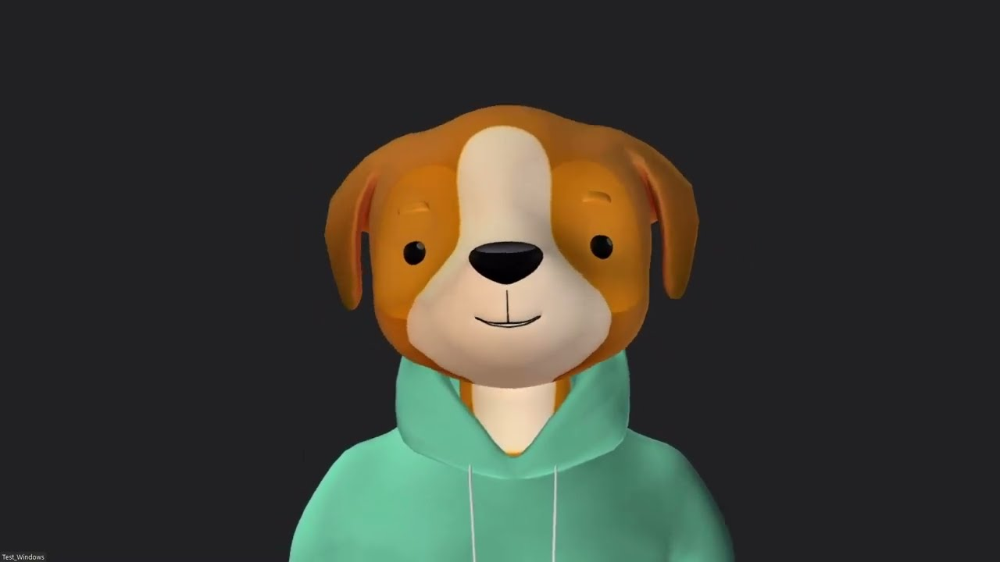

Mauro Lopez

Rol: Alumno
Email:mauro10lopez@gmail.com
Carrera: Ingeniería Informática
Legajo: I005741
Institucion:Facultad de Ingeniería
Estado: Activo
Perfil Academico
Mauro Lopez es estudiante de la Facultad de Ingeniería de la Universidad Nacional de Jujuy (UNJu), actualmente cursando la carrera de Ingeniería Informática. Forma parte de la comunidad académica que utiliza la plataforma para la gestión y seguimiento de proyectos educativos.Su participacion dentro del sistema se central en el desarrollo y documentacion de los proyectos relacionados con aplicaciones web , diseño de interfaz , manejo de sistema de Gestion, en marco de la actividad academica.
Dentro de la plataforma , su perfil refleja la actividad academica, los proyectos en los que partipo, mostrando su avance y participacion en el desarrollo de los trabajos dentro del entorno educativo.